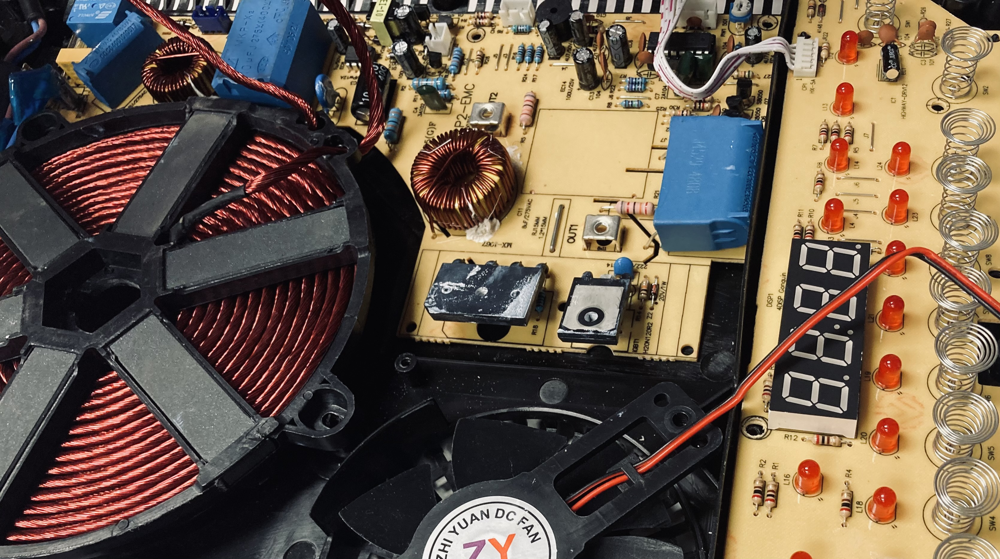

Tech beyond the myth
How can I see things from different perspectives? I don’t want to overuse my own perspective, my perspective should consists of many. To be able and place yourself to other view points, you have to know how others see and what is behind what you actually see…
This week we studied how to see behind and how to measure the word with different eyes, sensors and ears. The week was in two parts:
The first part of the week was about getting rid of the way how we thinking, by disassembling the objects we got rid of. Unfortunately I couldn’t take part in this class, because of an unexpected travel. But coming back the next day by seeing every ones presentation it was shocking to me to see the world behind our objects: Although we say a tv was made in one country, the truth behind is all about distribution Objects are made to not last and our behaviours made to not even think about saving something, by big producing companies All the design choices made be able to sell more and more rapidly by the lifetime of products, such as: making something thinner and smaller is actually not innovation but marketing And how an end price can be affected by the taxes and relations between countries.
Forensics of the obsolescence
The first part of the week was about getting rid of the way how we thinking, by disassembling the objects we got rid of. Unfortunately I couldn’t take part in this class, because of an unexpected travel. But coming back the next day by seeing every ones presentation it was shocking to me to see the world behind our objects: Although we say a tv was made in one country, the truth behind is all
- Although we say a tv was made in one country, the truth behind is all about distribution
- Objects are made to not last and our behaviours made to not even think about saving something, by big producing companies
- All the design choices made be able to sell more and more rapidly by the lifetime of products, such as: making something thinner and smaller is actually not innovation but marketing
- And how an end price can be affected by the taxes and relations between countries
Although I couldn’t participate in requiring this knowledge by disassembling, thanks to the help of one of our classmate - Jeremy, we were able to get to know an induction heater by reassembling it.
Measuring the world
Through this journey we studied about:
The other half of the week, we changed perspectives by measuring the world with sensors which are not connected to our own human sensor system. We measured the world, how the world measures and captures us every day, how most of the technology from low to high treats us as a product a data that helps questions to be answered.
- How should we see technology, and how something that is really analogue can turn into a technological solution
- That sometimes there is no difference in high and low tech answering everyday problems
- And about how should be information distributed among people and communities for equal data rights
Through the class we went from an every day objectives and hypothesis to results that shows us data behind events, people and activities in our every day systems.
See our data collection on our Hackmd page based on the hypthesis of: Instant messaging is making people feel lonely in Barcelona.
How we made sense of the data we collected!